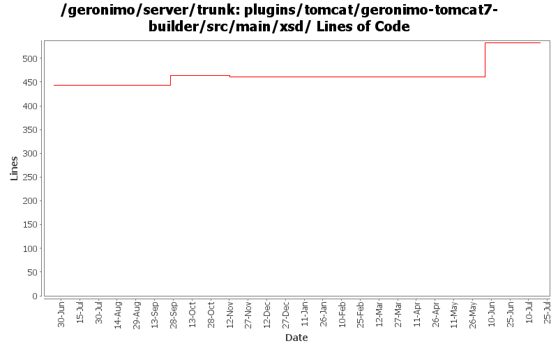

[root]/plugins/tomcat/geronimo-tomcat7-builder/src/main/xsd

| Author | Changes | Lines of Code | Lines per Change |
|---|---|---|---|
| Totals | 8 (100.0%) | 97 (100.0%) | 12.1 |
| genspring | 2 (25.0%) | 75 (77.3%) | 37.5 |
| xuhaihong | 1 (12.5%) | 22 (22.7%) | 22.0 |
| gawor | 1 (12.5%) | 0 (0.0%) | 0.0 |
| djencks | 2 (25.0%) | 0 (0.0%) | 0.0 |
| chirunhua | 2 (25.0%) | 0 (0.0%) | 0.0 |
GERONIMO-6011:support context level configurations for tomcat when using <container-config> in the deployment plan
0 lines of code changed in 2 files:
move schema conversion "openejb-jar" from SchemaConversoinUtils to jetty/tomcat builders.
2 lines of code changed in 1 file:
GERONIMO-5995 Provide a way to customize ejb in geornimo-web.xml, keep same the module structure to geronimo-application.xsd so that it's easier to extend in the future.
73 lines of code changed in 1 file:
remove persistence.xsd imports but allow for persistence elements to be specified in xml
0 lines of code changed in 1 file:
GERONIMO-5557 Add a similar context element in the schema, currently we could use this elements for most context level attributes configurations and context parameters. (Based on the patch from viola.lu)
22 lines of code changed in 1 file:
GERONIMO-5190 use openejb-jee jaxb tree for spec dds
0 lines of code changed in 2 files: